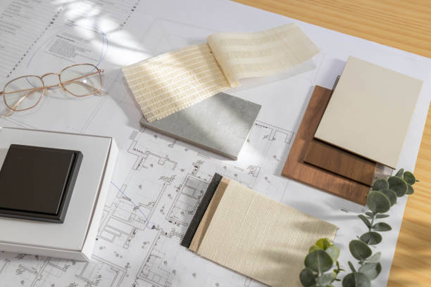

Hem
Ett hem är mer än bara väggar och möbler- det är känslan som gör skillnaden. Här fins information för att skapa vackra och personliga rum, där varje detalj bidrar till en harmonisk helhet. Med rätt kombination av färger, former och material blir hemmet en plats som speglar både stil och atmosfär, och som alltid bjuder in till trivsel och ro.
Små förändringar kan göra stor skillnad. En ny färg på väggen, ett mönstrat textilval eller några välplacerade ljuskällor kan ge rummet nytt liv. Här handlar det om att hitta balans mellan funktion och estetik- där praktiska lösningar möter detaljer som sätter stämningen.
Med rätt detaljer blir hemmet både mysigt och personligt. En mjuk filt i soffan, tända ljus i hörnet eller gröna växter på fönsterbrädan skapar genast en varm känsla. Här finns inspiration till enkla lösningar, kreativa idéer och smarta tips för att skapa trivsel i vardagen.

- Mysfaktor med textiler – lägg till en mjuk filt, några extra kuddar eller en matta för att skapa värme.
- Ljuset sätter stämningen – levande ljus, små lampor eller ljusslingor ger rummet en ombonad känsla.
- Gröna inslag – växter gör hemmet levande och bidrar till en lugnare atmosfär.
- Lek med färger och detaljer – små förändringar i färg eller dekoration kan ge nytt liv åt ett rum.
Om mig
Inredning AB är ett företag jag tänkt skapa i framtiden där jag ger inspiration och idéer. Min vision är att varje hem och arbetsplats ska spegla människorna som vistas där- med en personlig känsla, harmoni och smarta lösningar. På denna sida delas inspiration som hjälper användare att förvandla sina rum till platser som känns både vackra och välkomnande.
Jag är en 21 årig student från Stockholm som studerar UX-design vid Linnéuniversitet i Kalmar. Jag har en stark passion för allt som rör design. Min utbildning fokuserar främst på att utveckla användarupplevelser inom teknik, men utöver det har jag även ett stort intresse för fysisk design och hur det kan påverka människors vardag.
Genom Inredning AB vill jag kombinera min kreativa bakgrund med mitt intresse för människor och deras behov. Jag tror att bra design inte handlar om trender eller dyra lösningar, utan om att skapa miljöer där man trivs och kan vara sig själv. Därför strävar jag efter att lyfta fram det personliga i varje projekt och visa hur även små förändringar kan göra stor skillnad. Mitt mål är att inspirera och guida andra till att se potentialen i sin a egna rum och skapa inredning som håller över tid.
Kontakt
- E-postadress: kontakt@inredningab.se
- Telefonnummer: 00 000 0000
- Plats/ort: Bas i Stockholm
Har du frågor, idéer eller vill du samarbeta? Hör gärna av dig!

Projekt
Här kommer jag att visa upp några av mina inredningsprojekt och idéer. Från små förändringar till större renoveringar- allt för att inspirera och visa hur du kan skapa ett hem med både stil och funktion.